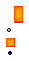

EEB.Components.BaseComponents.Ambient.Radiaton_SkyGround
EEB.Components.BaseComponents.Ambient.Radiaton_SkyGround
Package with Ambient components
This package contains model for ambient elements. Each model refers to an outer model that is AmbientConditions ,which contains all the infomration needed.
| Name | Description |
|---|---|
| GroundTemp | Ground temperature |
| AmbientAirTemp | Ambient air temperature |
| AmbientAirTempWithOpenings | Ambient air temperature with openings |
| Radiaton_SkyGround | Radiation sky-ground |
| Test |
Ground temperature
This model is used to set the ground temperature in the model. It refers to an outer model that is AmbientConditions.
| Type | Name | Description |
|---|---|---|
| HeatPort | port |
Ambient air temperature
This model is used to set the ambient air temperature in the model. It refers to an outer model that is AmbientConditions.
| Type | Name | Description |
|---|---|---|
| HeatPort | port |
Ambient air temperature with openings

This model is used in order to set ambient air temperature....
It refers to an outer model that is AmbientConditions.
| Type | Name | Description |
|---|---|---|
| HeatPort | port | |
| MoistAirFlange_wawvQd_waPart | dryair | |
| MoistAirFlange_wawvQd_wvPart | vapour | |
| HeatPort | diffuse |
EEB.Components.BaseComponents.Ambient.Radiaton_SkyGround
Radiation sky-ground
This model is used in order to take into account of the sky-ground radiation....
It refers to an outer model that is AmbientConditions.
| Type | Name | Default | Description |
|---|---|---|---|
| Length | L | 5 | Surface length [m] |
| Length | H | 3 | Surface height [m] |
| Real | inclination | 0 | Inclination of the surface: 90° vertical, 180° horizontal |
| Real | es | 0.9 | Surface emissivity |
| Real | eg | 0.9 | Ground emissivity |
| Type | Name | Description |
|---|---|---|
| HeatPortRad | wall |